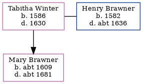

Tabitha Brawner (née Winter) 1586 - 1630
[ Home ] | [ Calendar ] | [ Surnames Index ] | [ Census Index ] | [ Family History ]Tabitha Winter, the 10 times great-grandmother of Nigel Horne, was born in Willesborough, Kent, England in 1586 and married Henry Brawner (with whom she had 1 child, Mary) in Willesborough on Apr 27, 16071, which is also where she died in 1630.
Children
- Mary was born c. 1609
Citations
- Kent, England, Extracted Parish Records Online publication - Provo, UT, USA: Ancestry.com Operations Inc, 2001.Original data - Electronic databases created from various publications of parish and probate records.Original data: Electronic databases created from various publications of parish and
Family Tree
Generated by ged2site. Last updated on Jun 11, 2024